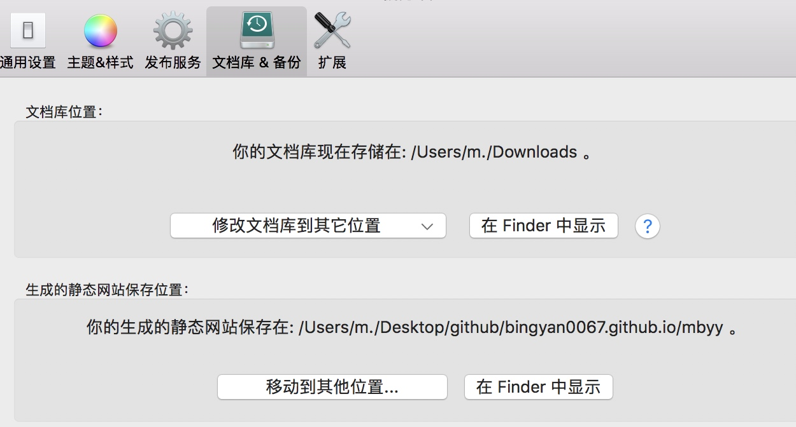

第一步： git发布脚本
Create a repository github官网
MdeMacBook-Pro:~ m.$ ls
20190902_100203033 Movies akindle
20190902_100956510 Music a国学
64pounds 笔记.docx NHK新编日语 a英语
AT.postflight.42853 One Drive a我一寸照
Applications Pictures nano.save
Desktop Public 旧电脑 马冰妍
Documents VirtualBox VMs 赛汗工作finder
Downloads WechatIMG516.jpeg
Library WechatIMG55.jpeg
MdeMacBook-Pro:~ m.$ cd Desktop
MdeMacBook-Pro:Desktop m.$ ls
books 昂沁
Linux_test 新机常备&必读
打印 遥远的敖特尔 封面
MdeMacBook-Pro:Desktop m.$ mkdir github
MdeMacBook-Pro:Desktop m.$ ls
books 昂沁
Linux_test 新机常备&必读
github 遥远的敖特尔 封面
打印
MdeMacBook-Pro:Desktop m.$ cd github/
MdeMacBook-Pro:github m.$ git clone https://github.com/BINGYAN0067/bingyan0067.github.io
Cloning into 'bingyan0067.github.io'...
remote: Enumerating objects: 3, done.
remote: Counting objects: 100% (3/3), done.
remote: Total 3 (delta 0), reused 0 (delta 0), pack-reused 0
Unpacking objects: 100% (3/3), done.
MdeMacBook-Pro:github m.$
MdeMacBook-Pro:github m.$ cd bingyan0067.github.io
MdeMacBook-Pro:bingyan0067.github.io m.$ echo "Hello Word" > index.html
MdeMacBook-Pro:bingyan0067.github.io m.$
MdeMacBook-Pro:bingyan0067.github.io m.$ git add --all
MdeMacBook-Pro:bingyan0067.github.io m.$ git commit -m "Initial commit"
[master e63ca75] Initial commit
Committer: M <m.@MdeMacBook-Pro.local>
Your name and email address were configured automatically based
on your username and hostname. Please check that they are accurate.
You can suppress this message by setting them explicitly. Run the
following command and follow the instructions in your editor to edit
your configuration file:
git config --global --edit
After doing this, you may fix the identity used for this commit with:
git commit --amend --reset-author
1 file changed, 1 insertion(+)
create mode 100644 index.html
MdeMacBook-Pro:bingyan0067.github.io m.$ git push -u origin master
Username for 'https://github.com': bingyan0067
Password for 'https://bingyan0067@github.com':
Counting objects: 3, done.
Delta compression using up to 4 threads.
Compressing objects: 100% (2/2), done.
Writing objects: 100% (3/3), 288 bytes | 288.00 KiB/s, done.
Total 3 (delta 0), reused 0 (delta 0)
To https://github.com/BINGYAN0067/bingyan0067.github.io
fb73c83..e63ca75 master -> master
Branch master set up to track remote branch master from origin.
MdeMacBook-Pro:bingyan0067.github.io m.$
第二步: Clone 你的 pages 到 MWeb 静态网站生成目录中
如果你之前都已经可以正常用 git 来发布静态网站了，可以跳过这一步。如果不是，请看下面的步骤：
所以我是不是多了一步？？

注：此处我改了静态网站的保存位置，但是很遗憾，原来的超级长的地址我没有记下来。现在的我改在了桌面的GitHub的文件夹里。
MdeMacBook-Pro:github m.$ git clone https://github.com/BINGYAN0067/bingyan0067.github.io
第三步：配置发布脚本
在下图，在 “MWeb 偏好设置” - “扩展” - “发布脚本” 中配置。
如果你点击 “加载例子” 按钮，加载出来的是以下的脚本样例：
第四步：使用
使用方法非常简单，右键网站分类，选择 “复制发布脚本命令并打开终端（Terminal）…”，当终端打开后，在终端中按快捷键 Command + V 即可。如图：